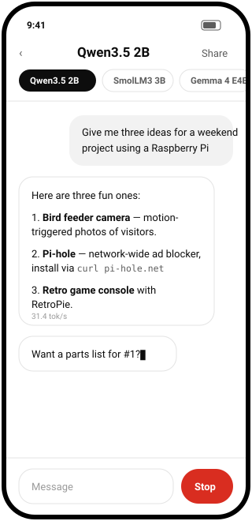
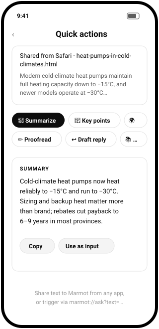
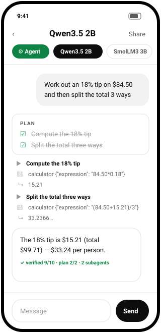
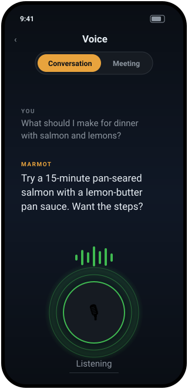

Share a screenshot, receipt, message, or document. Marmot understands it locally, proposes an editable action card, and waits for your approval before adding a calendar event, reminder, draft reply, or saved note. Nothing leaves the device.


Agent mode, voice, memory, research, MCP, and repo tools remain available for power users. They are Labs surfaces; the share-to-action loop is the product's first promise.
A planner decomposes the task, fresh-context subagents execute each step with calculator, clock, chat search, and RAG tools, live ☑ check-offs tick by, and an optional judge scores the answer before you see it.

A hands-free conversation loop with an animated voice stage — plus meeting mode: continuous transcription, and say “Marmot, …” for a suggested contribution it will only speak when you tap.

Facts about you, episodic summaries, imported documents, even whole GitHub repos — recalled with on-device embeddings and injected into every agent run.
Flip one switch and the agent can search and read the web, citing sources. Leave it off and Marmot is provably offline.
Markdown sharing, JSON backups to Drive or OneDrive via the share sheet, and safe re-import that never overwrites newer history. No cloud SDKs. No OAuth.
Nine layers, all shipped, all unit-tested — the same architecture the big coding agents converged on, running against a 2–4B model on your phone.
The highest-rated open model at every size a phone can carry — byte-exact, benchmark-picked, re-evaluated as new models ship. Or import any .gguf of your own.
Instant on any phone. 200+ languages.
The top-rated small all-rounder.
Strongest fully-open 3B.
Strongest dense 4B. Wants 8 GB RAM.
Closest to cloud quality on a phone.